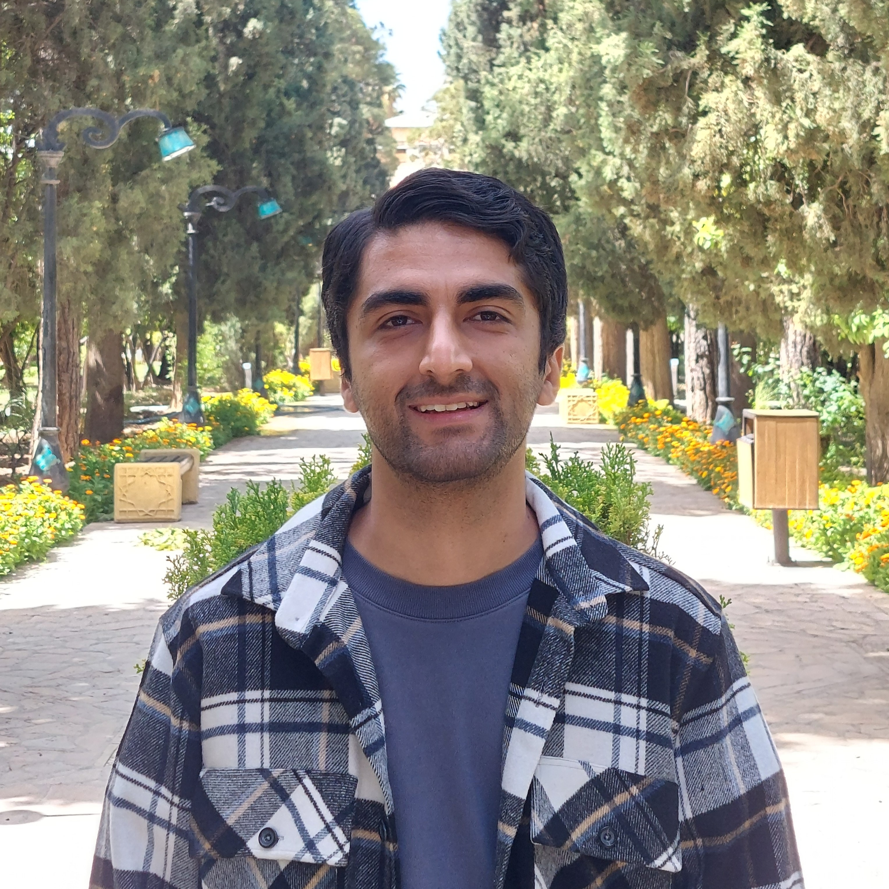
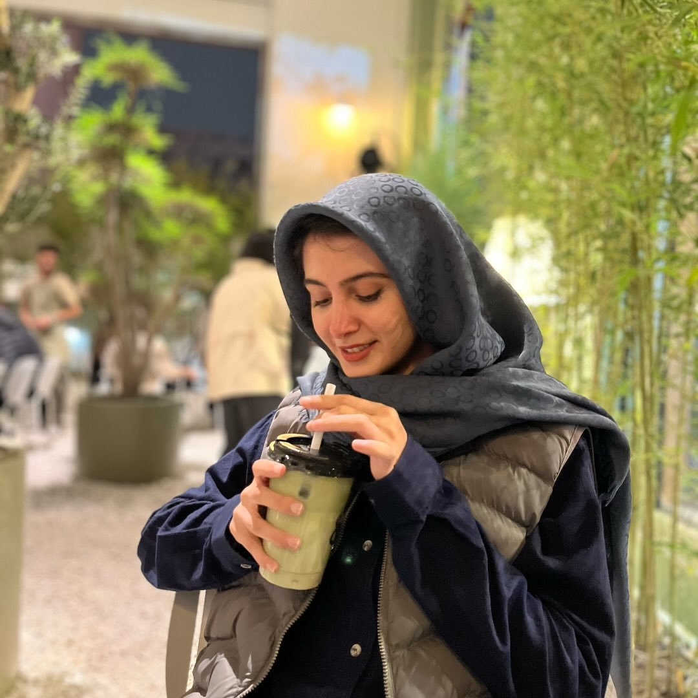

Course Project: Multi-Hop QA with RAG & GraphRAG
Build and evaluate an end-to-end multi-hop question answering pipeline across dense retrieval, BM25 + RRF hybrid fusion, Silver Knowledge Graph traversal (GraphRAG), and multi-hop reasoning on Kaggle Dual T4 GPUs.
01 Files & Resources
Handout specifications currently cover Phases 1–3
02 Milestones & Oral Defense Schedule
5 progressive phases · Individual 10–15 min defense per milestone
| Phase | Topic & Scope | Due Date | Oral Defense | Lead TA |
|---|---|---|---|---|
| Release |
Specification & Dataset Release
handout.pdf, course_pack_v1.zip, and starter.zip |
Sat, 1405-07-18 | — | Released |
| Phase 1 |
Dense Retrieval & Evaluation
Handcrafted IR metrics, document masking & 3 baselines (Closed-Book, Oracle, Dense RAG)
|
Thu, 1405-07-30 (23:59) | Jointly with Phase 2 1405-09-11 to 1405-09-13 |
Mohammad Amin Haeri @RST_LSS |
| Phase 2 |
Hybrid Retrieval & Grounded Generation
Handcrafted BM25, RRF fusion, token-budget packing, citations & abstention
|
Fri, 1405-08-29 (23:59) | Wed–Fri, 1405-09-11 to 1405-09-13 |
Poorya Saneei @pooryasn |
|
Phase 3
Active
|
Knowledge Graph & GraphRAG
LLM triple extraction on 200 passages, groundedness filter, k-hop BFS with provenance on
silver_kg.jsonl & RRF fusion |
Fri, 1405-09-20 (23:59) | To be announced |
Maryam Mortazavi Nik @thisisnikk |
| Phase 4 |
Multi-Hop Routing & Final Evaluation
Adaptive routing, iterative reasoning, query reformulation & hidden evaluation
|
To be announced | To be announced | To be announced |
| Phase 5 |
Supplementary Phase (TBD)
Supplementary details will be announced in future handout updates
|
To be announced | To be announced | To be announced |
Handcrafted IR metrics, document masking & 3 baselines.
Handcrafted BM25, RRF fusion, token-budget packing, citations & abstention.
LLM triple extraction on 200 passages, groundedness filter, k-hop BFS with provenance on silver_kg.jsonl & RRF fusion.
Adaptive routing, iterative reasoning, query reformulation & hidden evaluation.
Phase 1 oral defense check-ins run jointly with Phase 2 during Dec 2–4, 2026 (Wed–Fri, 1405-09-11 to 1405-09-13). Phase 3 oral defense slots and Phase 4–5 schedules will be announced via official course channels.
03 Project Mentorship Team
Phase lead TAs for office hours & oral defense


04 Submission & Evaluation
Submission Package (P<N>_<StdID>.zip)
- Private GitHub Repo: Modular codebase with
requirements.txt,README.md, and the exact submission commit hash on page 1 of your report. - Run Outputs: One folder per run containing
predictions.jsonlandrun_config.yamlfollowingpredictions_format.md. - Technical Report: Concise PDF (max 3 pages) covering implementation choices, metric tables, comparisons, and error analysis.
Grading & Oral Defense
- Grade Split: ~40% for code correctness, predictions, and report; 60% for the live oral defense and technical comprehension.
- Oral Check-In (10–15 mins): Live pipeline run on 3–5 queries, inspection of handcrafted core mechanisms, and live parameter/prompt adjustments.
- Academic Integrity: Peer discussion and AI coding assistants are permitted, provided you personally understand and can modify all submitted code live.
05 Late Policy & Engineering Bonus
Deadlines & Grace Budget
Software Engineering Extra Credit
- Structured Configs: Centralize hyperparameters in YAML generating
run_config.yaml. - Unit Tests: Lightweight
pytestsuite verifying handcrafted metrics, masking, RRF, and parsers. - CI Workflow: GitHub Actions running unit tests automatically on every push.
- Experiment Tracking: Clean MLflow (SQLite) or Weights & Biases run logs linked to report tables.